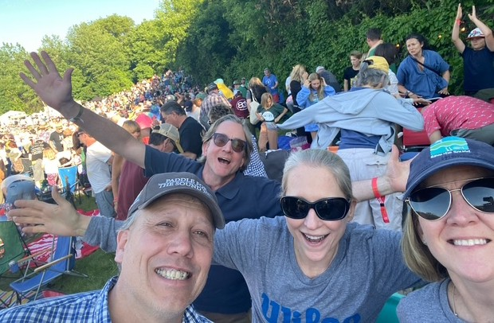
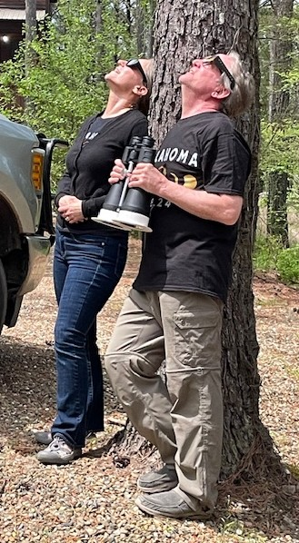
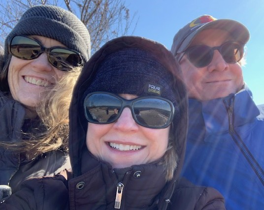
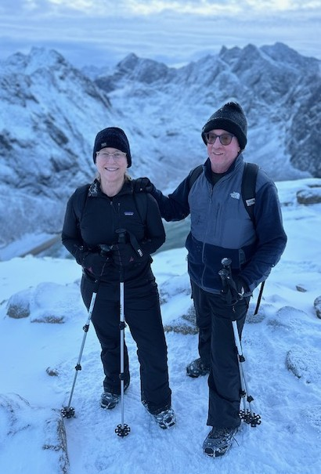

Solid Sound Festival at MASS MoCA
Get your Festival tickets here!

April 8, 2024: Family Reunion and Solar Eclipse, Broken Bow, Oklahoma

Charles Island, Silver Sands State Park, Connecticut
Link to scenes from this beautiful placeAnd a picture of a memorable winter afternoon, hiking around the island with Torin and a dear family friend

Winter mountain hiking, Lofotodden National Park (2024)
Click this link to be inspired to make this journey!
Students, librarians, neighbors! No matter what is happening in the world, band is there to make things feel better!
Check out this nice news article about last spring's concert!
The link is here!Our 2026 Spring Concert will be on Thursday, April 23, 7:30 pm Charles Garner Recital Hall.
Here is a small selection from the list
| Bookstore Name | City Location |
|---|---|
| Possible Futures | New Haven |
| Black Rock Books | Bridgeport |
| The Curious Cat Bookshop | Winsted |
| Byrd's Books | Bethel |
| The Golden Owl | New London |
| Telegraph Autonomous Zone | New London |
| RJ Julia Bookseller | Madison |